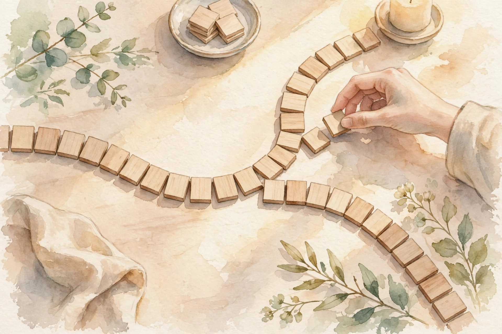

U07 · Autoregressive models and modern bridges
One joint law, factored left to right. Three tokens, one chain rule, and the transformer that scales it to billions of parameters.
Source fact A number, formula, or claim taken directly from the lesson file content/v2/math-genmodels/lessons/u07.md, with its section tag.
Interpretation Companion commentary that connects ideas. It restates, never invents.
Illustration A toy or figure built by this companion for intuition. Numbers here are demonstrative, not lesson numbers.
U07-C08 A pointer to the lesson concept that owns the fact.
No lecture transcript exists for this unit. The lesson is locally authored bridge content, and every leaf carries PLANNED / SOURCE ATTRIBUTION PENDING. This companion narrates the lesson, not a lecture. No source video exists.
Chapter 1 · C01 to C03
Source factU07-C01 The running toy: alphabet {a, b, c}, sequence "abc". p(a) = 0.5, p(b|a) = 0.4, p(c|a,b) = 0.25. Key numbers: p(abc) = 0.05, log p = -2.9957 nats, NLL = 2.9957, perplexity 2.7144.

Illustration Each tile chooses the next. The order is the model. AI-generated watercolor.
Source factU07-C02 The full conditional table for position 2: p(a|a) = 0.35, p(b|a) = 0.4, p(c|a) = 0.25. Each row sums to 1. Given "a", the most likely next token is b at 0.4.
Source factU07-C03 Logits (1, 2, 3) for (a, b, c). Softmax: (0.0900, 0.2447, 0.6652). Token c has probability 0.6652. The NLL of observing c is -log 0.6652 = 0.4076. For the full sequence "abc": NLL = 2.9957.
Nugget 01 · U07-C01
What happened. Three conditionals multiplied to 0.05. Reverse order would give the same 0.05 with different factors.
Why it matters. The chain rule factors any joint law into a product of conditionals, one per position. The factorization is always valid. The product is order-free. The factors are not.
Principle. An inconsistent set of conditionals that do not come from one joint sums to something other than 1. Always derive conditionals from one joint.
Chapter 2 · C04 to C05
Source factU07-C04 Train on "abc": the loss uses the true "a" when predicting b, and the true "ab" when predicting c. NLL = 2.9957. At sampling time, the model draws its own first token: suppose it draws "c" instead of "a". It now conditions on a context it never saw in training. Errors compound: one wrong token shifts every later conditional.
The price is exposure bias: the model never learns to recover from its own mistakes.
Source factU07-C05 Three positions, one weight matrix per layer. The causal mask is lower triangular: position 2 reads positions 1 and 2, never 3. The 3x3 mask has 6 ones and 3 zeros. Position 3 sees all three. Position 1 sees only itself. The mask is applied before the softmax: future scores become -inf, future weights become 0.
Nugget 02 · U07-C04
What happened. Training used true prefixes and stayed parallel. Sampling used its own outputs and went serial. One wrong first token poisoned every later conditional.
Why it matters. Teacher forcing feeds ground-truth prefixes: fast and stable. The price is exposure bias. Scheduled sampling mixes in model predictions to close the gap, at the cost of slower sequential training.
Principle. A model with great NLL and terrible samples was never tested on recovery. Evaluate samples, not just loss.
Nugget 03 · U07-C05
What happened. Six ones, three zeros. No gradient path from the future to the past existed.
Why it matters. Causality is enforced structurally, not by hope. Without the mask, the model reads the answer it must predict, the loss collapses, and the model cannot sample.
Principle. One unmasked layer leaks the future through the whole network. Test causality: shift the input by one and confirm the outputs shift too.
Chapter 3 · C06 to C08
Source factU07-C06 Q = K = I_2, V = [[2,3],[4,5]], causal mask. Scores QK^T/sqrt(2): [[0.7071, -inf],[0, 0.7071]]. Softmax rows: [1, 0] and [0.3302, 0.6698]. Output: row 1 = [2, 3], row 2 = 0.3302 × [2,3] + 0.6698 × [4,5] = [3.3395, 4.3395]. Row 1 attends only to itself: the mask forces it.
Illustration Turn the temperature knob. Softmax of the lesson logits (1, 2, 3) at your temperature. The lesson checkpoints: T = 0.5, 1, 2.
T: 1.00
Source factU07-C07 Temperature 1: (0.0900, 0.2447, 0.6652). Temperature 0.5: (0.0159, 0.1173, 0.8668): sharper, near-greedy. Temperature 2: (0.1863, 0.3072, 0.5065): flatter, more diverse. T toward 0 is argmax. T toward infinity is uniform.
Source factU07-C08 log p(abc) = log 0.5 + log 0.4 + log 0.25 = -2.9957 nats. Exact. Perplexity = exp(2.9957/3) = 2.7144: the effective branching factor per token. A uniform model over 3 tokens has NLL 3.2958 and perplexity 3. The toy model is slightly better than uniform.
Nugget 04 · U07-C06
What happened. Row 2 split its attention (0.3302, 0.6698) and mixed the values into (3.3395, 4.3395). Every number was hand-checkable.
Why it matters. Attention is a data-dependent weighted average. The 1/sqrt(d) scale keeps the dot products O(1) at init so the softmax starts diffuse. Forgetting the scale saturates the softmax and training never starts.
Principle. The scale is load-bearing. Each row of weights sums to 1: verify it.
Nugget 05 · U07-C07
What happened. T = 0.5 gave token c 0.8668. T = 2 gave the worst token 0.1863: one draw in five.
Why it matters. Temperature is the exploration knob. Top-k and top-p truncate the tail first, then sample: they remove the embarrassing low-probability tokens that high T would otherwise surface. The sampler is part of the model as deployed.
Principle. High T without truncation rambles. Truncate first, then temper.
Nugget 06 · U07-C08
What happened. NLL -2.9957 became perplexity 2.7144, against uniform 3. Two AR models compare honestly by NLL.
Why it matters. Autoregressive models share the flow family exact likelihood: the factorization is exact, so the sum of log-conditionals is the true log joint. Perplexity is the per-token geometric mean, lower is better, but only within one tokenization.
Principle. Comparing perplexities across tokenizations is meaningless. Normalize to bits per character first.
Chapter 4 · C09 to C12
Source factU07-C09 L = 512, d = 64. Attention multiplications: 512^2 × 64 = 16,777,216 per head per layer for the scores alone. The scores matrix is 512 × 512 = 262,144 entries. KV cache per layer per sequence in fp32: 2 × 512 × 64 × 4 bytes = 262,144 bytes = 256 KB. Ten layers: 2.5 MB per sequence. Batch 32: 80 MB just for cache. At L = 4096: 4096^2 × 64 = 1.07B mults per head.
Source factU07-C10 Mask the b in "abc". BERT learns p(b | a, c): both sides visible. The product p(a) × p(b|a,c) × p(c) is not a valid factorization of p(a,b,c): the middle term conditions on the future. With p(a,c) = 0.2 and p(abc) = 0.05: p(b|a,c) = 0.25. A valid conditional, but the triple does not factor the joint.
Source factU07-C11 Conditional flow matching: x_0 = 0 (noise), x_1 = 2 (data), t = 0.25. The straight path: x_t = 0.5. The target velocity: u = x_1 - x_0 = 2. The model predicts v = 1.8. Loss: (2 - 1.8)^2 = 0.04. Train v_theta(x_t, t) to match it by regression. At sampling time, integrate the learned ODE.
| model | likelihood | exact? |
|---|---|---|
| AR | -2.9957 | yes |
| flow | about -2.9957 | yes, plus dequantization |
| VAE | -3.4 (bound) | no, lower bound |
| GAN | not defined | no |
Source factU07-C12 The VAE bound -3.4 could hide a true -2.9 (better than the flow) or a true -3.4. The bound does not say.
Nugget 07 · U07-C09
What happened. 16.8M mults at L = 512 became 1.07B at L = 4096. The cache ate 80 MB for a batch of 32.
Why it matters. Attention is quadratic in L. Training pays it once per batch. Inference pays it per generated token: each new token attends to all past tokens.
Principle. Use full attention until L or the budget says stop. Then go sparse, linear, or recurrent.
Nugget 08 · U07-C10
What happened. The masked conditional 0.25 was valid. The triple (p(a), p(b|a,c), p(c)) still did not factor the joint.
Why it matters. Masked language modeling is a representation objective, not a generative one. It learns bidirectional context, excellent for understanding. It does not define a joint law: the conditionals need not come from one joint. There is no ancestral sampler.
Principle. Use masked models for understanding, AR for generation. Never compare masked pseudo-likelihoods with AR NLLs.
Practice
Source fact The lesson ships a unit assessment: 6 breadth-recall questions, 2 deep ladders of 5 follow-ups, 2 analytical exercises, 1 implementation debug (excellent loss, garbage samples, mask present), and 2 changed-constraint scenarios. Keys live in lessons/keys/keys-u07.md. The lab pointer lists 6 hands-on exercises in labs/lab-u07.md.
Source fact Lesson figures referenced: u07_f01_chain_rule.png (p(abc) = 0.05, log -2.9957), u07_f02_causal_mask.png (lower triangular mask), u07_f03_attention_toy.png (row 2: (0.3302, 0.6698), (3.3395, 4.3395)), u07_f04_temperature.png (T=0.5 peaks 0.8668, T=2 flattens), u07_f05_chapter.png (order is the model). The charts on this page re-plot the lesson numbers above.
Wisdom index